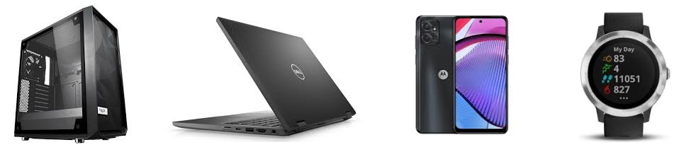
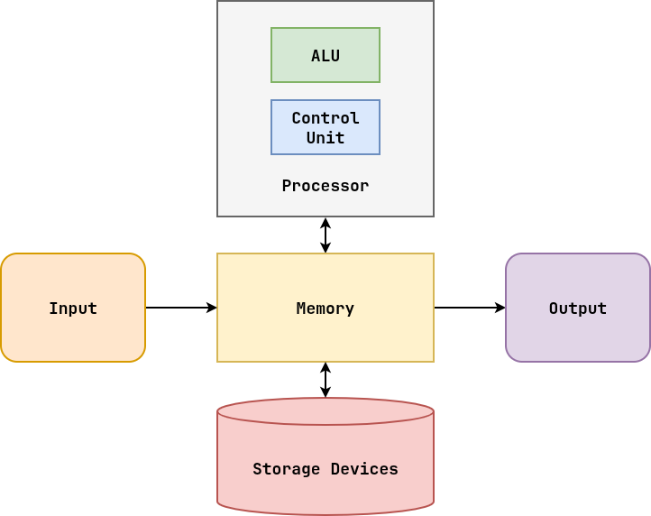
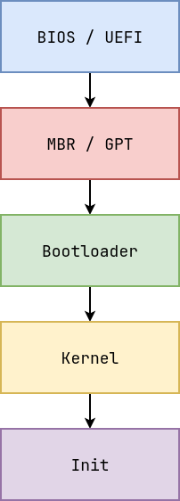

Syllabus¶
Syllabus: Ice Breaker¶
- Go row by row (asking people their name)
Syllabus: Whoami?¶
- Triple Domer, Children
- Introduce TAs (if present)
Syllabus: Motivation¶
-
Understanding how software interacts with hardware is crucial for SECURITY and performance
-
House of Cards:
- Applications: shell, filters (grep, sed, regular expressions)
- Standard Library:
printf, system calls - Operating System: kernel (focus on principles)
Syllabus: Logistics¶
-
Explain why we have Readings (need regular practice)
-
Honor Code: encouraged to work together and teach each other but sharing solutions is not helping; use AI as if they were a TA
Computer Hardware¶
Computer Hardware: House of Cards¶

Computer Hardware: A Computer is...¶
A general purpose information processing machine.

A digital computer is an electronic device that processes binary data.
Computer Hardware: Architecture¶

Computer Hardware: Devices¶

A modern computer is a collection of smaller specialized computing devices that work together by communicating using a variety of protocols and interfaces.
Computer Hardware: Components¶
Identify the following components in the provided computers:
- Processor
- Memory
- Storage
- I/O


Boot Sequence¶
Boot Sequence: BIOS / UEFI¶

BIOS / UEFI¶
The Basic I/O System (BIOS) or Unified Extensible Firmeware Interface (UEFI) is the first program (ie. firmware) that is executed by the processor when the computer is powered on:
-
Usually stored in ROM
-
Performs some basic system integrity checks
-
Searches for device to boot or primary bootloader
Demonstration¶
-
View
UEFI (F12) -
View
bootloader (space) -
Reboot with nosplash
-
Reboot with init=/usr/bin/python3
Boot Sequence: MBR / GPT, Bootloader¶
MBR / GPT¶
The Master Boot Record (MBR) or GUID Partition Table (GPT) is a special data structure that records the organization of the storage device.
-
The partition table maps how the storage device is divided into separate partitions
-
MBR is limited to 4 partitions, while GPT is limited to 128 partitions
-
MBR contains a small primary bootloader program whose job is to locate the active boot partition and launch the next bootloader
Bootloader¶
The secondary bootloader is a program that loads the operarting system kernel and an optional RAM disk.
-
Because this program is not restricted to the MBR, it can be larger and support features such as multiple filesystem support and graphical menus
-
The RAM disk is a temporary in-memory filesystem with essential drivers and tools for loading the physical storage devices
-
Examples: GRUB, systemd-boot, Limine
Boot Sequence: Kernel / Init¶
Kernel¶
The kernel is the core of the operating system whose job is to provide abstractions such as processes, threads, virtual memory, and filesystems such that applications can efficiently utilize the underlying hardware and interact with each other.
On Linux and macOS, to see the kernel messages since boot, use:
# Print kernel messages $ dmesgInit¶
Init is the first user-space application and is in charge of configuring, executing, and supervising user-space daemons and services.
-
System Bootstrapping: Mount file systems, configure networking, start services
-
Service Management: Starts, stops, and monitors system services
-
Process Reaping: Adopts orphan processes and cleans up their resources when terminated
An Operating System is ...¶
A set of abstractions (processes, threads, virtual memory, filesystems) that enable applications to effectively and efficiently utilize hardware resources and interact with each other.
-
Computer Architecture
-
Data Structures
-
Algorithms